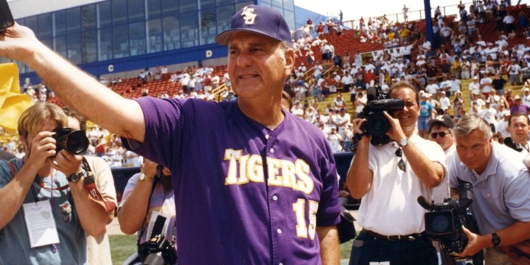

Legendary LSU coach Skip Bertman passes at age 88

J. Stanley “Skip” Bertman, one of the premier head coaches in the history of college baseball during his time at LSU, passed away peacefully at the age of 88.
Bertman will be missed. There’s zero doubt about that. But what an incredible legacy the long-time LSU head coach and Louisiana icon leaves behind in Baton Rouge.
“Few people have had a greater impact on LSU than Skip Bertman,” said LSU Vice President/Director of Athletics Verge Ausberry. “As the greatest college baseball coach of all-time, and later as our Athletics Director, Skip developed a championship standard and culture that still guide us today. Personally, he was a dear friend, mentor and advisor, and I’m forever grateful for the trust and faith he placed in me to serve this institution. I will continue to honor Skip by leaning into the lessons he taught me every day. Our thoughts and prayers are with his loved ones at this time.”
Bertman, some say, could be called the architect of modern college baseball in the Southeastern Conference, and the sport as a whole. He was hired back in 1984 after an eight-year stint as an assistant coach under legendary Miami head coach Ron Fraser. Bertman, who played for the Hurricanes, arrived at LSU hoping to turn the program into the juggernaut that he helped build in South Florida.
He went on to build a program that has since become the gold standard in college baseball, from on-field results to the passion in the stands. In terms of true passion for the sport of college baseball, there’s LSU and Mississippi State, and then there’s everyone else. That was the doing of Bertman and legendary Mississippi State head coach Ron Polk.
Bertman’s mark on LSU was, in a simple word, incredible.
Bertman certainly became adored in Baton Rouge for his success on the field with the baseball team, but he also spent a successful stint as the athletic director the Tigers — a role he had for seven years. He loved LSU, and once his coaching career ended, he wanted to continue leaving a mark on the university. He did exactly that.
“By far the greatest part of being the baseball coach at LSU the last five years is the relationship I was able to build with the greatest college baseball coach of my lifetime, Skip Bertman,” LSU head coach Jay Johnson said. “The mentorship, and most importantly, the friendship we built is easily one of the best, most rewarding, and special relationships I have ever had. What an honor it has been to sit with, talk baseball with, smile with, and laugh with Coach.
“Coach Bertman was so far ahead of his time while leading the LSU Tigers, and as a young coach just starting my journey, I watched, studied, and admired his incredible skills of leading, motivating, teaching, coaching, and ultimately cultivating what became ‘The Powerhouse’ of college baseball. Being able to share the 2023 and 2025 national championships with Coach Bertman watching is something I wouldn’t trade for the world. The impact he made and the legacy he has left on the state of Louisiana and college baseball is beyond remarkable and will never be duplicated.
“I love you Coach, I will miss you, and will continue to work every day in a manner that I know would make you proud.”
On the field, Bertman had a laundry list of accomplishments.
The legendary head coach guided the Tigers, who had never been to the College World Series before his arrival, to 11 CWS appearances during his 18-year tenure with the program. He also led the program to national titles in 1991, 1993, 1996, 1997 and 2000 and finished his career with an 870-330-3 overall record. Additionally, Bertman guided the Tigers to seven SEC championships, while also earning national Coach of the Year honors on five occasions in 18 seasons.
Bertman’s love for college baseball did not end with his coaching or stint as an athletic director. Upon retirement, Bertman’s love for LSU and the sport shined brighter than ever. He frequently attended LSU games during the season and would even show up for most of LSU’s Fall World Series.
He was an advocate for LSU, and our sport, until the end.
Skip Bertman will be missed. His legacy, though, will never be forgotten.